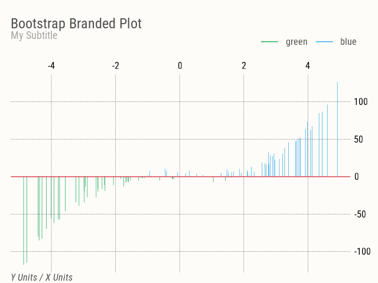

R package with Mel’s utilities for data science projects and (Quarto) web publishing.
In particular this package includes Bootstrap themes and color scales for base R graphics, lattice and ggplot, implementing the (recent) brand.yml flexible document branding system.
This feature allows for logos, primary colors, color palettes and fonts to be specified and swapped across projects and clients using run-time YAML config files and well-known Bootstrap Sass variables. This package includes (my personal) themes and additional utilities to flexibly turn Bootstrap features on/off.
Installation
You can install this package from the development version on GitHub:
if (!require("remotes")) install.packages("remotes")
remotes::install_github("mbacou/mbutils")Documentation
For complete R package documentation and technical guides, see the package vignette.
My default (opinionated) plots with custom sizing ans spacing and default X-axis on the right.
library(mbutils)
brand_on(bg="transparent")
set.seed(1)
x <- runif(100, min = -5, max = 5)
y <- x ^ 3 + rnorm(100, mean = 0, sd = 5)
plot(x, y, type="h", col=(y>0)+4, nx=NULL,
main="Bootstrap Branded Plot", sub="My Subtitle",
xlab="X Units", ylab="Y Units")
abline(h=0, col=pal.brand("red"), lwd=2)
legend(names(pal.brand())[4:5], lty=1, lwd=2, col=4:5)
brand_off()
License
This package is licensed under the terms of the GNU General Public License version 3 or later.
Copyright 2021-2026 Melanie Bacou.